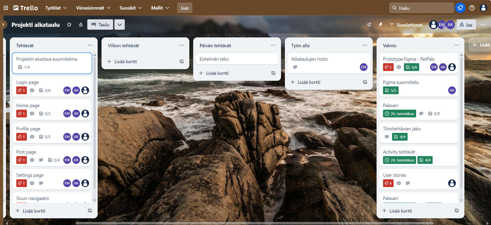
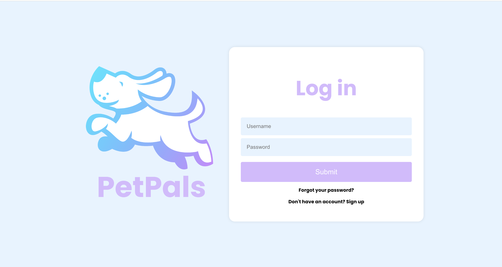
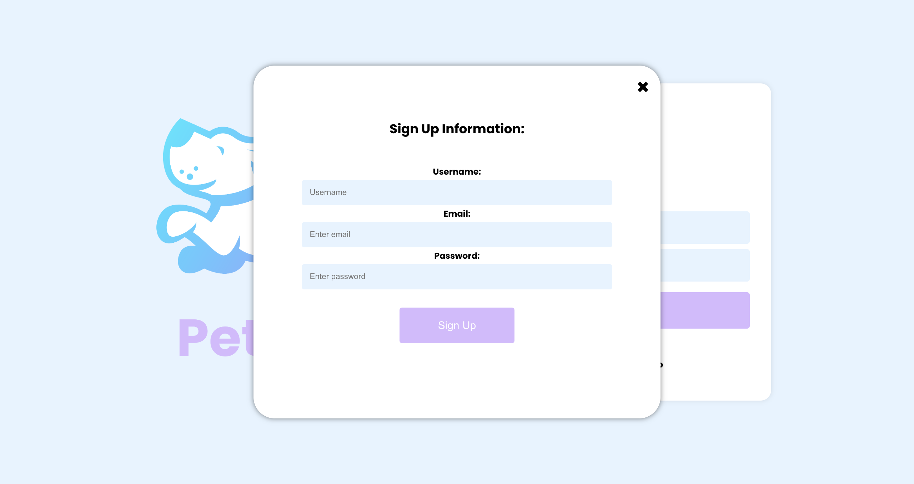

Welcome to PetPals
Social media platform for your beloved pets!
Creators
Anni Kannisto - Developer
Birgitta Öberg - Product Owner
Eetu Mäntylä - Scrum Master
Jukka Savela - Developer
PetPals is a vibrant social media platform where pet owners, influencers, pet businesses, animal rescuers, event organizers and pet trainers connect, share, collaborate, and engage within a supportive and inclusive community dedicated to celebrating and caring for pets.
Share Pet Moments
Share adorable pictures and videos of your pets with the PetPals community.
Connect with Pet Devotees
Discover and connect with fellow pet lovers, like, comment, and share the joy of pet ownership.
Customize Your PetPals Profile
Create a personalized space showcasing your pets and their unique stories.
Sprint 1
Prototype created with Figma
LOG IN

HOME

PROFILE

POST

SETTINGS

SCRUM
PetPals uses Scrum methodologies to manage its social media platform development, employing user stories, a product backlog, INVEST criteria, and the deep principle to create a collaborative and efficient development process.
User Stories for PetPals involve creating engaging features, such as seamless photo sharing, user profiles, and social interactions, to enhance the experience connecting on the platform.
More detailsThe PetPals product backlog outlines prioritized tasks, including photo sharing, user profiles, and social interactions, ensuring a focused development approach aligned with user needs.
More detailsPetPals follows INVEST criteria, ensuring user stories are clear, valuable, estimable, and testable, facilitating focused and continuous development of the social media platform.
More detailsPetPals embodies DEEP principles, promoting focused work, team empowerment, and a creative environment for ongoing platform enhancement.
More detailsQuick look into our SCRUM Masters TRELLO schedule
Sprint 4
Current stage
LOG IN
SIGN UP
FORGOT PASSWORD